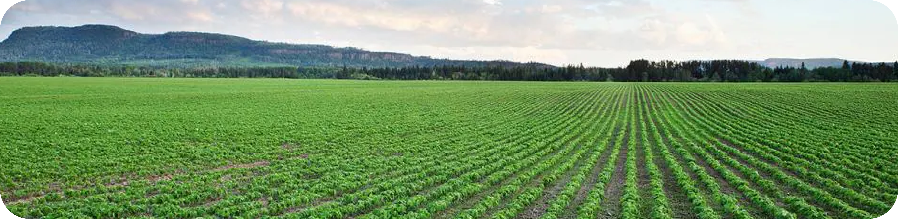
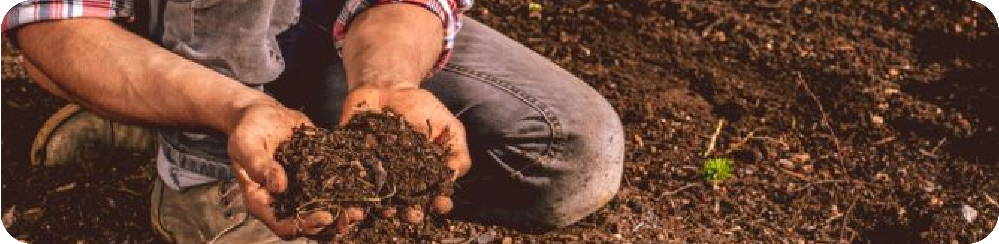

-

- 
- 
La importancia del campo
El campo es la base de la producción de alimentos. En las zonas rurales se cultivan cereales, frutas, verduras y se cría ganado para obtener carne, leche y huevos. La agricultura y la ganadería proporcionaron los alimentos necesarios para alimentar a la población, contribuyendo a la seguridad alimentaria. Por eso llega Magro una empresa que se dedica en contactar productores campesinos que produzcan sus mismos alimentos. La asociación magro se dedican en vender los productos sin la necesidad de tener un intermediario y los mismos cacultores obtiene sus ganancias en forma directa, manejan precios demasiados asequibles y su calidad es buena.